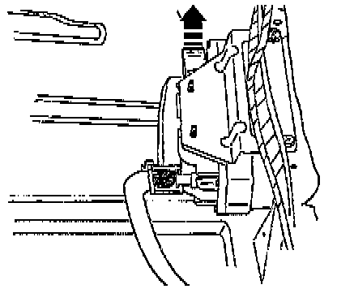

01M Transmission
CAUTION: Select the appropriate measuring range on the multimeter before connecting the test leads to avoid damaging the electronic components.NOTE:
- Use the digital multimeter Fluke 83 with auxiliary harness from VAG 1594 for testing.
- The specified values are valid for ambient temperatures from 0 - 40°C (32 - 104°F).
- If the readings obtained differ from the specified values, determine the malfunction using the wiring diagram.
- If the readings obtained differ only slightly from the specified values, clean sockets and connectors of the testers and test leads and repeat test.
- Before replacing the particular component(s), test wiring and connections, and if specified values are below 10 ohms, repeat resistance measurements on components.
- The ground connection point is located on the left next to the relay plate.
- Check battery ground strap and ground strap between battery and transmission.
- The Transmission Control Module (TCM) -J217- is located under the rear seat.
TEST CONDITIONS
^ Battery Positive Voltage (B+) OK.
^ Fuses 14 and 21 OK.
^ Ground (GND) connections OK.
ELECTRICAL CHECKS
- Switch ignition off.

- Release multi-pin connector in direction of arrow and disconnect from control module.

- Fit test box VAG 1598/18 onto multi-pin connector (1) and lock, in direction of arrow (2).
- Using test box VAG 1598/18 the wiring can be checked according to wiring diagram.

- After electrical checks, connect multi-pin connector to TCM -J217- and lock.
NOTE: When connecting, ensure that the guides (arrows) are engaged on TCM pins.